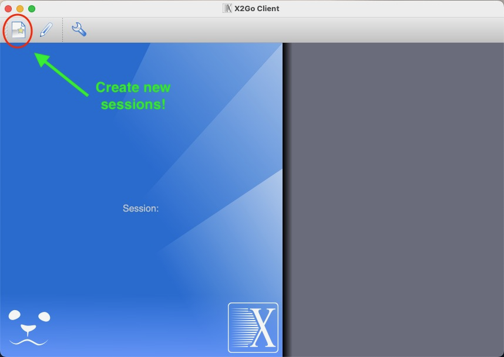
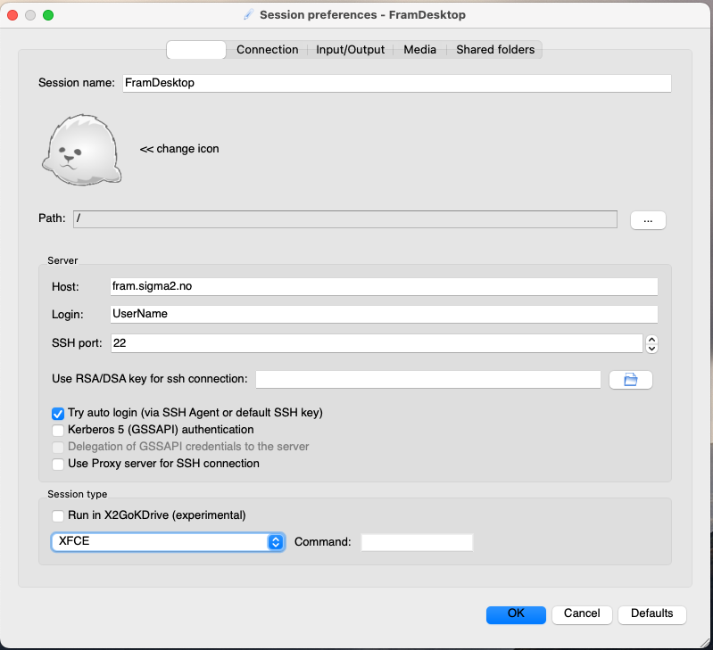
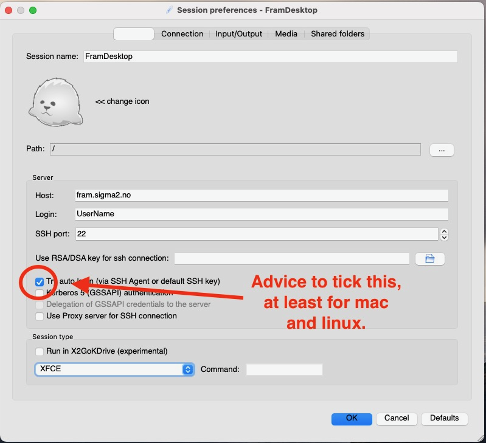
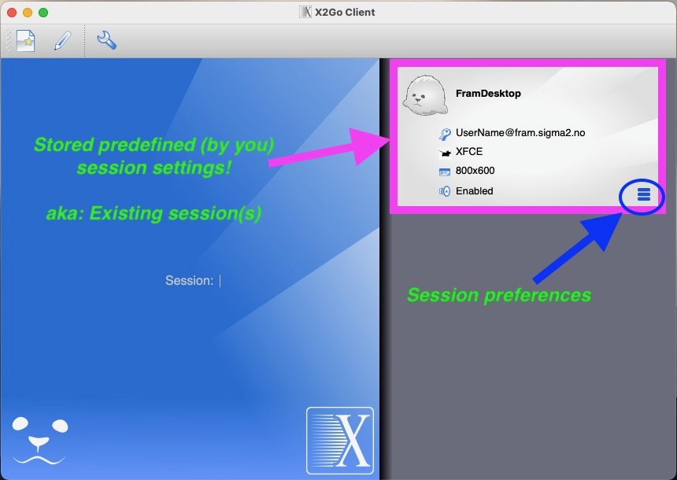

Remote Desktop
Introduction
The remote desktop service makes it possible to run graphical applications on all NRIS machines with reasonable performance over the network. Currently (Apr. 2023) the login-system has no hardware acceleration so running advanced 3D rendering applications will probably not have adequate performance.
X2Go
The supported solution on NRIS machinery is X2Go - https://wiki.x2go.org/doku.php/doc:newtox2go. X2Go is an application that enables you to do remote visualization on external machines. It works as a Remote Desktop Protocol on top of NX/X11. X2Go Client requires a local X11 server to display the remote sessions. The server you use depends on your local operating system, as follows:
Windows systems: an X11 server is provided with X2Go client.
Linux systems: the client component of X2Go uses the local Xorg server.
Mac OS X systems: you must install the XQuartz X11 server as an extra component.
How to use the service on NRIS machines
X2Go requires both a server application to run on the remote server and a client application to run on the user machine. X2Go Server is installed on all login nodes on all NRIS machines, thus standard login procedure should work perfectly fine.
In order to use X2Go, users have to install X2Go Client on their computer(s). The way to do this is to download the X2Go client valid for your operating platform from https://wiki.x2go.org/doku.php/download:start and follow the instructions for installing on your machine.
How to configure the X2Go client for NRIS machines
Create a session:

Give this session a suitable name, for instance FramDesktop.
In the Session tab:

Server section
Host:
For Fram: fram.sigma2.no
For Saga: saga.sigma2.no
For Betzy: betzy.sigma2.no
Login: (aka username) - your NRIS system user name
SSH port: 22
Use RSA/DSA key for ssh connection:
For Mac and Linux: Leave blank if you want to use your ssh-keys from standard location.
For windows: Create SSH keys on your local machine and point to the public key.
Try auto login:
Check(see picture below). Especially advised for machines running Mac and Linux OS, which has “hidden path” standard for ssh-key folder.

Proxy server section
Leave unchecked
Session type section
Choose
XFCEin the drop down menu of you want a desktop type setup.Choose
Single applicationand addusr/bin/xtermin the command window if you just want an xterm application running.
Then you are basically good to go. Log in to the machine in question by clicking on one of the predefined sessions you have just made, start a terminal window and start working.

To start an X2Go session, you double click on your session icon in the top right corner of the X2Go client window (see above).
Troubleshooting
In the past we have experienced that a manual kill of the x2goagent processes on the server side have created challenges for users who wants to restart sessions. This seems to be handled intuitively well inside the X2Go client now. However, if there are issues related to usage of X2Go, please notify firstline support about this so we are able to update documentation accordingly.
Acknowledgement:
Much of the content of and inspiration for this page is borrowed from the X2Go documentation provided by NTNU for the Hunt Cloud service: https://docs.hdc.ntnu.no/working-in-your-lab/technical-tools/x2go/